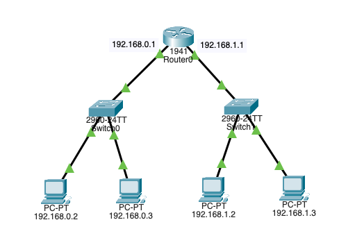
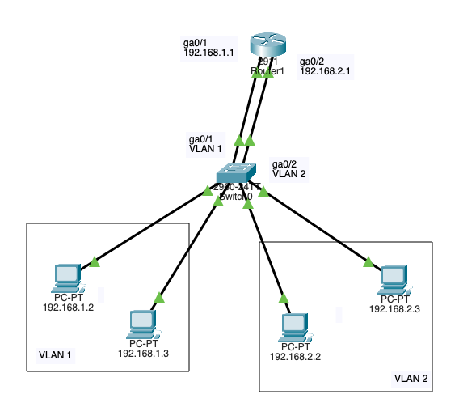
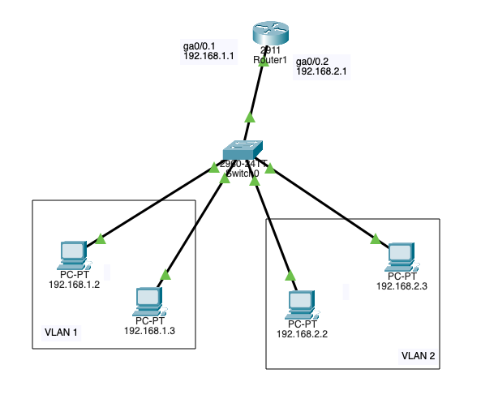

Network Layer
A layer that enables the transmission of data between two nodes on the different networks. It handles routing and determining the path of data through a network.
Internet Protocol (IP)
A set of rules governing the routing and addressing packets (communication and exchange) of data over the internet
Internet Protocol Address V4 (IPv4)
A network address that is used to locate the device; it has 32-bit numbers represented as strings of 0s and 1s
Binary
11000000.10101000.00000001.00000001
Decimal
192.168.1.1
IPv4 Addresses Classification
-
Public addresses
- Used for external communication (access the Internet)
-
Private addresses
- Used for internal communication (access resources in a local network)
IPv4 Addresses Classes
-
Class A
- 1.0.0.1 to 126.255.255.254
- Networks: 126
- Host per 1 a networks: 16,777,214
- Subnet Mask: 255.0.0.0
-
Private Range
- 10.0.0.0 to 10.255.255.255
- Used for very large networks
-
Class B
- 128.1.0.1 to 191.255.255.254
- Networks: 16,382
- Host per 1 a networks: 65,534
- Subnet Mask: 255.255.0.0
-
Private Range
- 172.16.0.0 to 172.31.255.255
-
169.254.0.0 to 169.254.255.255
- Automatic Private IP Addressing (APIPA)
- A device will assign itself an IP address within that range if Dynamic Host Configuration Protocol (DHCP) does not work or failed
- Used for small networks
-
Class C
- 192.0.1.1 to 223.255.254.254
- Networks: 2,097,150
- Host per 1 a networks: 254
- Subnet Mask: 255.255.255.0
-
Private Range
- 192.168.0.0 to 192.168.255.255
- Used for very small-sized network
-
Class D
- 224.0.0.0 to 239.255.255.255
- Reserved for multicast groups.
-
Class E
- 240.0.0.0 to 254.255.255.254
- Research/Reserved/Experimental
Note: Class A also has 127.0.0.0 to 127.255.255.255 are reserved for loopback and diagnostic (Those addresses cannot be used)
Subnet
A method of creating a smaller network inside a large network
- 255.0.0.0 - /8 - 1 network - 16,777,214 hosts in the network
- 255.128.0.0 - /9 - 2 subnets - 8,388,606 hosts in each network
- 255.192.0.0 - /10 - 4 subnets - 4,194,302 hosts in each network
- 255.224.0.0 - /11 - 8 subnets - 2,097,150 hosts in each network
- 255.240.0.0 - /12 - 16 subnets - 1,048,574 hosts in each network
- 255.248.0.0 - /13 - 32 subnets - 524,286 hosts in each network
- 255.252.0.0 - /14 - 64 subnets - 262,142 hosts in each network
- 255.254.0.0 - /15 - 128 subnets - 131,070 hosts in each network
- 255.255.0.0 - /16 - 256 subnets - 65,534 hosts in each network
- 255.255.128.0 - /17 - 512 subnets - 32,766 hosts in each network
- 255.255.192.0 - /18 - 1,024 subnets - 16,384 hosts in each network
- 255.255.224.0 - /19 - 2,048 subnets - 8,190 hosts in each network
- 255.255.240.0 - /20 - 4,096 subnets - 4,094 hosts in each network
- 255.255.248.0 - /21 - 8,192 subnets - 2,046 hosts in each network
- 255.255.252.0 - /22 - 16,384 subnets - 1,022 hosts in each network
- 255.255.254.0 - /23 - 32,768 subnets - 510 hosts in each network
- 255.255.255.0 - /24 - 65,536 subnets - 254 hosts in each network
- 255.255.255.128 - /25 - 131,072 subnets - 126 hosts in each network
- 255.255.255.192 - /26 - 262,144 subnets - 62 hosts in each network
- 255.255.255.224 - /27 - 524,288 subnets - 30 hosts in each network
- 255.255.255.240 - /28 - 1,048,576 subnets - 14 hosts in each network
- 255.255.255.248 - /29 - 2,097,152 subnets - 6 hosts in each network
- 255.255.255.252 - /30 - 4,194,304 subnets - 2 hosts in each network
Internet Protocol Address V4 (IPv4) Example
192.168.1.0/25, the first node starts at 0, and the last one is 126
-
192.168.1.0
- 0 is the network address (network identifier)
-
192.168.1.2
-
192.168.1.126
-
192.168.1.127
- Broadcast address (All nodes in that subnet respond to it)
Router
A physical or virtual device that forward data packets between computer networks (Uses IP addresses and stores that in a routing table)

VLAN Interconnection
A technique that used to allow routing between VLANs

VLAN Interconnection (Router on stick - Trunk port)
A technique that used to allow routing between VLANs using a single interface

Cyberattacks
- Man in the Middle (MITM)
- A threat actor intercepts and relays messages between 2 targets (This attack is a type of eavesdropping attack)
- Hijacking attack
- Session Hijacking
- A threat actor accesses the user's account using a stolen or leaked valid (existing) session identifier
- Eavesdropping attack
- Wi-Fi Eavesdropping (Evil Twin)
- Spoofing attack
- ARP Spoofing
- A threat utilizing the victim's MAC (This happens after the ARP poising, and the threat actor can carry the end goal of the cyberattack like a man in the middle)
- DNS Spoofing
- When a victim gets directed to a malicious website (This happens after DNS poising)
PCAP Example
The web server here uses 0.0.0.0 IP; this is a placeholder that means listen to all, it accepts incoming connections from all network adapters (If this was 127.0.0.1, it would only be accessible to processes running on the device itself). A client can connect to this web server using the network adapter IP, in this case, the network adapter IP is 10.0.0.2 as shown in the Wireshark image
from http.server import SimpleHTTPRequestHandler
from socketserver import TCPServer
from io import BytesIO
from gzip import GzipFile
from datetime import datetime
from contextlib import suppress
with suppress(Exception):
from netifaces import gateways, ifaddresses, AF_INET, AF_LINK
print("The default network interface is: ",gateways()['default'][AF_INET][1])
print("The default network interface mac address is: ",ifaddresses(gateways()['default'][AF_INET][1])[AF_LINK])
class Server(SimpleHTTPRequestHandler):
def do_GET(self):
compressed = False
content = b'<HTML><h1>Hello World!</h1></HTML>'
if len(content) > 0:
if 'accept-encoding' in self.headers:
if 'gzip' in self.headers['accept-encoding']:
bytes_ = BytesIO()
with GzipFile(fileobj=bytes_, mode='w', compresslevel=5) as f:
f.write(content)
f.close()
content = bytes_.getvalue()
compressed = True
self.send_response(200)
if compressed:
self.send_header('content-encoding', 'gzip')
self.send_header('content-length', len(content))
self.end_headers()
self.wfile.write(content)
def log_message(self, format, *args):
print("[{}] - {}:{} - {} {}".format(datetime.now().strftime("%m/%d/%Y %H:%M:%S"), self.client_address[0],self.client_address[1],args[0],args[1]))
TCPServer(('0.0.0.0', 80), Server).serve_forever()
Clint/Server IP Addresses
The IPs are added to each packet
| Layer |
Protocol |
PDU |
Info |
Ports |
IPs |
MACs |
| Transport Layer |
TCP |
Segments |
3 Way handshake Process (SYN) |
Src Port: 35310
Dst Port: 80 |
|
|
| Network Layer |
IP |
Packets |
3 Way handshake Process (SYN) |
Src Port: 35310
Dst Port: 80 |
Src IP: 10.0.0.3
Dst IP: 10.0.0.2 |
|
| Data Link Layer |
Ethernet |
Frames |
3 Way handshake Process (SYN) |
Src Port: 35310
Dst Port: 80 |
Src IP: 10.0.0.3
Dst IP: 10.0.0.2 |
Src MAC: bc:35:db:cf:1b:03
Dst MAC: bc:f2:b8:57:86:02
|
| Physical Layer |
Coax |
Bits |
01001000 01010100 01010100 |
01001000 01010100 |
01001000 01010100 |
01001000 01010100 |